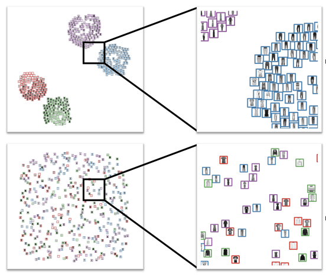

Does the Layout Really Matter? A Study on Visual Model Accuracy Estimation

Venue. VIS (2021)
Abstract. In visual interactive labeling, users iteratively assign labels to data items until the machine model reaches an acceptable accuracy. A crucial step of this process is to inspect the model’s accuracy and decide whether it is necessary to label additional elements. In scenarios with no or very little labeled data, visual inspection of the predictions is required. Similarity-preserving scatterplots created through a dimensionality reduction algorithm are a common visualization that is used in these cases. Previous studies investigated the effects of layout and image complexity on tasks like labeling. However, model evaluation has not been studied systematically. We present the results of an experiment studying the influence of image complexity and visual grouping of images on model accuracy estimation. We found that users outperform traditional automated approaches when estimating a model’s accuracy. Furthermore, while the complexity of images impacts the overall performance, the layout of the items in the plot has little to no effect on estimations.
Link to this page: